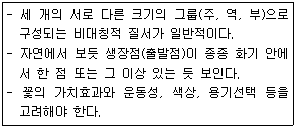
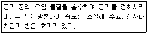

화훼장식기능사 (2012-04-08 기출문제)
1과목: 화훼장식재료
1. 구근식물 중에서 인경류에 해당하지 않는 것은?
- 아마릴리스
- 칸나
- 수선
- 히야신스
(정답률: 50%)

2. 다음 중 화훼의 특징을 잘 못 설명한 것은?
- 높은 재배기술이 필요한 작품이다.
- 국제성이 상당히 높은 작품이다.
- 대표적인 분산작물이다.
- 종과 품종이 많고 다양하다.
(정답률: 83%)
3. 화훼의 이용형태 중에서 생산화훼에 관한 설명으로 틀린 것은?
- 생산화훼는 영리를 목적으로 절화, 절엽, 절지, 분화, 종묘, 화단묘, 구근을 생산하고 공급하는 것이다.
- 절엽은 꽃장식에 있어서 배경식물로 이용하기 위해 잎을 자른 것을 말한다.
- 한국에서는 분화, 종묘, 구근 등의 생산비율이 높지만 유럽과 미국에서는 절화의 생산비율이 높은 편이다.
- 분화는 식물체를 용기에 심어서 판매하는 형태로 식물을 기르는 것을 말한다.
(정답률: 65%)
4. 생화인 절화 줄기의 고정방법이 아닌 것은?
- 격자
- 침봉
- 글루포트
- 철망
(정답률: 72%)
5. 다음 중 잎의 착생양식이 대생하는 식물이 아닌 것은?
- 개나리
- 거베라
- 숙근안개초
- 용담
(정답률: 50%)
6. 다음 중 선인장에 속하지 않는 것은?
- 네펜데스
- 금호
- 월하미인
- 비모란
(정답률: 61%)
7. 다음 중 붉은 줄기를 소재로 이용하는 식물로 가장 적당한 것은?
- 미국미역취
- 흰말채나무
- 글라디올러스
- 스토크
(정답률: 79%)
8. 테라리움에 대한 설명으로 옳지 않은 것은?
- 라틴어의 terra(흙)과 arium(작은 용기)의 합성어에서 그 용어가 유래되었다.
- 밀폐된 투명한 작은 용기 속에 흙을 채우고 각종 식물을 배치하여 기르면서 감상하는 원예활동을 말한다.
- 주로 건조한 환경을 좋아하는 식물, 온도 변화에 민감하지 않고 잘 견디는 식물이 적합하다.
- 바닥에 물이 흐르지 않기 때문에 인테리어 효과가 뛰어나다.
(정답률: 55%)
9. 화훼장식에서 건조용 소재의 설명으로 틀린 것은?
- 국내에서 가장 많이 이용된 건조소재는 다래덩굴이다.
- 건조화는 꽃에만 국한되지 않고, 꽃, 잎, 줄기, 뿌리, 나무껍질, 버섯, 이끼 등이 이용되고 있다.
- 수분이 적고 꽃잎과 줄기가 딱딱하여 건조 후 변형이 잘되지 않는 절화를 채집한다.
- 홍화, 밀, 양귀비는 열매를 건조소재로 이용한다.
(정답률: 54%)
10. 생산화훼의 용도별 분류와 그에 사용되는 식물의 연결로 옳지 않은 것은?
- 절화 - 스마일락스, 글라디올러스
- 절엽 - 동백, 몬스테라
- 절지 - 조팝나무, 개나리
- 분화 - 포인세티아, 아잘레아
(정답률: 44%)
11. 화훼장식에 사용되는 철사에 관한 설명으로 틀린 것은?
- 화훼장식 디자인에 사용하는 철사는 무게와 지름의 크기에 따라 다양한 규격을 가지고 있다.
- 화훼장식용 철사는 표준규격의 수치가 높을수록 철사의 굵기가 굵어진다.
- 너무 굵은 철사를 사용하면 재료를 손상시키고 너무 가는 철사를 사용하면 지지 역할을 제대로 못하게 된다.
- 재료를 받쳐서 제자리에 지탱시킬 수 있는 범위 내에서 가장 가는 철사를 사용하는 것이 좋다.
(정답률: 92%)
12. 뿌리의 형태와 기능에 관한 설명으로 틀린 것은?
- 뿌리는 수염뿌리와 덩이뿌리로 나눌 수 있다.
- 뿌리에서 흡수된 양수분은 목부를 통해 줄기와 잎으로 운반된다.
- 체관은 양분을 잎에서 뿌리로 수송한다.
- 괴경은 뿌리가 비대하여 양분의 저장기관으로 변태한 것이다.
(정답률: 48%)
13. 다음 절화의 형태분류 중 필러 플라워에 속하지 않는 것은?
- 카스피아
- 안개꽃
- 공작초
- 안스리움
(정답률: 72%)
14. 다음 중 아스파라거스 속이 아닌 식물의 종명은?
- myriocladus
- sprengeri
- meyerii
- comosum
(정답률: 64%)
15. 다음 중 일반적으로 열매가 자주색으로 나타나는 식물은?
- 피라칸타.
- 백량금
- 남천
- 좀작살나무
(정답률: 60%)
16. 절화의 물올림 방법으로 적절하지 않은 것은?
- 물속에서 재절단하며, 재절단 시 가위보다 예리한 칼을 사용한다.
- 같은 종 또는 같은 품종 단위로 동일한 용기에 넣고 물올림 시킨다.
- 유액이 나오는 줄기는 재절단 후 끓는 물에 수 초간 담근다.
- 수분 흡수를 좋게 하기 위해서 줄기 기부를 수평으로 절단한다.
(정답률: 88%)
17. 고전적 형태의 하나로 양끝이 서로 이어지려는 듯이 곡선과 공간의 균형이 아름다우며 동적인 느낌을 주는 디자인은?
- 나선형
- 초승달형
- 수직형
- 둥근형
(정답률: 86%)
18. 압화의 재료로 사용하기 어려운 꽃은?
- 주름이 많은 꽃
- 색이 선명한 꽃
- 꽃잎의 수분함량이 적은 꽃
- 구조가 간단하고 꽃잎이 작은 꽃
(정답률: 91%)
19. 화훼류의 개화 조절 방법에 속하지 않는 것은?
- 춘화처리
- 생장조절제 처리
- 전조 또는 차광
- 멀칭
(정답률: 87%)
20. 토양의 수분함수와 관련하여 수분이 포화된 상태의 토양에서 증발을 방지하면서 중력수를 완전히 배제하고 남은 수분상태를 무엇이라고 하나?
- 최대용수량
- 포장용수량
- 초기위조점
- 영구위조점
(정답률: 51%)
2과목: 화훼장식 제작 및 유지관리
21. 절화보존용액의 효과로 거리가 먼 것은?
- 절화의 관상기간을 연장시킨다.
- 절화의 물올림을 원활하게 해준다.
- 조기 채화된 봉오리의 개화를 돕는다.
- 절화의 색상과 향기를 증진시킨다.
(정답률: 70%)
22. 시큐어링 기법을 바르게 설명한 것은?
- 사용한 철사가 약하거나 짧을 때 더욱 단단하게 보강하기 위해 사용하는 방법
- 꽃의 약한 줄기를 보강해 주거니 줄기를 구부릴 때 그 줄기를 보강하기 위해 사용하는 방법
- 와이어 줄기를 한 개로 하는 방법으로 굵은 와이어의 끝을 갈고리 모양으로 구부려서 줄기에 따라 감아 내린 방법
- 씨방이나 꽃받침 부분의 줄기에 철사를 직각이 되게 찔러 넣고 두 가닥이 되게 구부리는 방법
(정답률: 65%)
23. 공간연출을 위한 디자인 과정으로 옳은 것은?
- 기획 - 조사분석 - 구상 - 계획 - 시공 - 관리
- 조사분석 - 기획 - 계획 - 구상 - 시공 - 관리
- 계획 - 기획 - 구상 - 조사분석 - 시공 - 관리
- 구상 - 기획 - 계획 - 조사분석 - 시공 - 관리
(정답률: 49%)
24. 줄기를 나선상으로 조합하여 둥근형으로 만드는 신부화는?
- 캐스케이드 부케
- 바스켓 부케
- 비더마이어 부케
- 트라이앵글러 부케
(정답률: 77%)
25. 식물 소재의 손질 방법으로 틀린 것은?
- 구입한 절화소재에서 시들거나 손상된 부위의 꽃잎과 이은 제거하고 잎이 너무 무성하면 솎아준다.
- 절화 줄기나 나뭇가지 아랫부분의 잎은 깨끗하게 제거한다.
- 비슷한 길이의 서로 평행으로 자란 나뭇가지는 모양이 좋으므로 가지를 자르지 않고 잘 살리는 것이 좋다.
- 대칭으로 자란 잔가지는 번갈아 쳐내어 공간을 살리는 것이 좋다.
(정답률: 82%)
26. 다음 중 굴지성이 가장 잘 나타나는 절화는?
- 스프레이국화
- 거베라
- 글라디올러스
- 장미
(정답률: 58%)
27. 진주암을 1000˚C 정도의 고온에서 가열한 무균 인조 토양으로 공극량이 많은 토양은?
- 피트모스
- 질석
- 펄라이트
- 훈탄
(정답률: 91%)
28. 에틸렌 발생의 요인으로 거리가 먼 것은?
- 시들은 절화
- 익어가는 과일
- 질병에 감염된 분식물
- 저온
(정답률: 82%)
29. 웨딩부케를 제작할 때 가장 중요하게 고려해야 할 사항은?
- 신부이므로 화려하게 제작하는 것이 원칙이다.
- 가볍고 들기 쉽게 만들어야 한다.
- 멋스럽고 크게 만드는 것이 좋다.
- 신부의 체형보다도 예식장 전체 분위기에 맞게 하는 것이 좋다.
(정답률: 81%)
30. 분식물장식에 대한 설명으로 틀린 것은?
- 테라리움은 밀폐된 용기 속에 식물을 심고 연못을 만들어 거북이나 물고기를 넣어 키우는 것이다.
- 디시가든은 용기에 키가 작고 생육속도가 느린 식물을 심는 분식물장식이다.
- 걸이분은 바구니를 비롯한 가벼운 용기에 식물을 심어 매달아 키우는 형태이다.
- 수경재배는 토양 대신 식물을 지지할 수 있는 배지와 물을 넣어 재배하는 것을 말한다.
(정답률: 88%)
31. 간단한 가족모임을 위해 꽃을 꽂으려 한다. 장식물을 식탁 위에 둔다면 다음 중 어느 형으로 계획하는 것이 가장 적합한가?
- 피닉스형
- 피라미드 형
- 수평형
- 부채형
(정답률: 83%)
32. 볏단, 밀짚다발, 옥수수대 등을 이용하여 같은 재료 또는 비슷한 재료를 단단히 묶는 기법은?
- 조닝
- 시퀀싱
- 번들링
- 테라싱
(정답률: 74%)
33. 수직적인 디자인의 주소재로 가장 어울리는 것은?
- 스킨답서스
- 개나리
- 말채
- 스마일락스
(정답률: 62%)
34. 절화장식에 속하는 것은?
- 콜라주
- 테라리움
- 디시가든
- 비바리움
(정답률: 79%)
35. 주간 온도가 16˚C, 야간 온도가 23˚C일 때의 DIF 값은?
- ＋39
- ＋7
- -7
- -39
(정답률: 58%)
36. 동양식 꽃꽂이를 위한 화기의 크기와 너비 40㎝×높이 5㎝일 때, 제 1주지의 표준길이로 가장 적합한 것은?
- 약 30~40㎝
- 약 45~65㎝
- 약 70~90㎝
- 약95~1⑤㎝
(정답률: 60%)
37. 하나로 묶어서 결합시키는 기법이 아닌 것은?
- 바인딩
- 랩핑
- 그룹핑
- 밴딩
(정답률: 68%)
38. 자연줄기 그대로를 표현해서 꽃다발을 연상하게 만든 꽃꽂이 형태는?
- L자형
- 스프레이형
- 크리센트형
- 패러렐 스트라우스
(정답률: 52%)
39. 식물의 생장 형태 혹은 앞으로 생장하게 될 형태를 사실적ㅇ로 표현하는 조형 형태로 옳은 것은?
- 식생적 구성
- 장식적 구성
- 형-선적 구성
- 도형적 구성
(정답률: 90%)
40. 분식물의 용기에 대한 설명으로 틀린 것은?
- 용기는 배수구가 있는 것이 관수, 관리하기 용이하다.
- 일반적으로 키가 큰 식물은 낮고 넓은 용기가 적절하다.
- 배수구가 있는 용기는 물 받침이 충분하지 않으면 바닥에 물이 넘칠 수 있어 주의한다.
- 배수구가 없는 용기는 관찰용 파이프를 묻어 용기 바닥의 물을 관찰해 준다.
(정답률: 84%)
3과목: 화훼장식론
41. 콜라주에 대한 설명으로 틀린 것은?
- 20세기에 등장한 독특한 시각예술이다.
- 천, 금속, 돌 등의 재료를 붙여서 구성하는 표현기법 중 하나이다.
- 프랑스어 '풀칠', '붙이다' 의미를 가진 coller에서 유래되었다.
- 벽장식으로만 이용한다.
(정답률: 76%)
42. 검정색과 노란색을 사용하는 교통표지판은 색채의 어떠한 특성을 이용한 것인가?
- 색채의 연상
- 색채의 이미지
- 색채의 명시성
- 색채의 심리
(정답률: 90%)
43. 화훼장식의 주재료인 생화는 지속시간이 짧은 단점을 가지고 있다. 이 단점을 보완할 수 있는 것은?
- 콜라주
- 종이
- 건조화
- 염색화
(정답률: 83%)
44. 유럽의 절화장식에서 꽃의 자연거조나 누름건조, 꽃그림 그리기, 조개, 왁스, 깃털, 구슬 등으로 조화를 만드는 기술이 교육되었던 시기로 옳은 것은?
- 르네상스 시대
- 빅토리아 시대
- 바로크 시대
- 영국 조지 시대
(정답률: 64%)
45. 리듬을 만드는 방법에 해당하지 않은 것은?
- 색의 규칙적인 반복 사용
- 같은 형태의 꽃을 반복 사용
- 색의 연계
- 이직적인 색을 동일 양으로 사용
(정답률: 67%)
46. 건조화가 최적의 소재가 되기 위한 특성이 아닌 것은?
- 유연성이 있어야 한다.
- 지속성이 있어야 한다.
- 원하는 색을 유지해야 한다.
- 건조나 가공 후 변형이 있어야 한다.
(정답률: 89%)
47. 황금비율을 가장 바르게 나열한 것은?
- 8:3:1
- 8:4:1
- 8:5:3
- 8:6:3
(정답률: 77%)
48. 다음 중 상대적으로 깊이감이 덜 요구되는 기법은
- 쉐도잉 기법
- 그룹핑 기법
- 파베 기법
- 테라싱 기법
(정답률: 57%)
49. 우리나라 분식물장식의 역사로 틀린 것은?
- 문인, 문객들의 문집에 수록된 시에서 그 흔적을 찾아 볼 수 있다.
- 고려말기의 자수병풍에서 분식물을 찾아 볼 수 있다.
- 한국의 전통적인 분식물은 매화나무나 소나무 등 자생 목본식물이 주종을 이룬다.
- 홍만선의 산림경제에는 노송을 비롯한 만년송 등에 대한 내용을 수록하고, 어울리는 수형과 분토에 이끼를 생겨나게 하는 요령 등이 자세히 소개되어 있다.
(정답률: 49%)
50. 다음과 같은 고려사항이 요구되는 화훼장식의 조형 형태는?

- 식생적 구성
- 장식적 구성
- 형-선적 구성
- 병행적 구성
(정답률: 69%)
51. 화훼장식 소재와 표면구조의 특성으로 옳게 짝지어진 것은?
- 안수리움-나무와 같은
- 팬지-금속과 같은
- 클레마티스 열매 - 솜털 같은
- 아킬레아 - 실크와 같은
(정답률: 56%)
52. 현대의 꽃꽂이에 대한 설명으로 옳은 것은?
- 일제 강점기의 잔재로 전통꽃꽂이가 계승되지 못했던 시절이 있었다.
- 세계화 추세로 전통적인 꽃꽂이가 완전히 없어졌다.
- 서양식 디자인의 도입으로 소재는 다양해졌으나 형태적인 다양성을 이루지 못하고 있다.
- 오늘날의 화훼장식은 실용적인 의미보다는 화도로서의 의미가 더 크다.
(정답률: 71%)
53. 건조화에 대한 설명으로 틀린 것은?
- 전시방법, 장소, 위치에 덜 구애받는다.
- 쉽게 부패되는 소재는 방부제 처리를 해준다.
- 꽃이 만개하였을 때 건조하는 것이 효과적이다.
- 보관 시에는 햇빛이 적게 받는 곳에 둔다.
(정답률: 77%)
54. 다음 중 비대칭적인 균형을 가장 효과적으로 나타낼 수 있는 디자인은?
- 라운드
- 초승달형
- 원추형
- 다이아몬드형
(정답률: 81%)
55. 액체 글리세린 건조법에 대한 설명으로 틀린 것은?
- 건조된 재료의 저장에 폴리에틸렌 필름을 사용한다.
- 수분이 글리세린으로 교환되어 좋은 질감과 유연함을 갖는다.
- 수분흡수 능력이 있는 계절에 이용 가능하다.
- 글리세린의 농도와 처리시간에 따라서 색깔에 차이가 있다.
(정답률: 42%)
56. 화훼장식 정의와 가장 거리가 먼 것은?
- 식물을 주 소재로 시간, 장소, 목적에 적합한 아름다운 조형물을 설치하는 것이다.
- 화훼장식의 넓은 의미는 화훼장식물을 유지 및 관리하는 영역도 포함 된다.
- 식물에 인간의 창의력이 첨가된 조형예술이다.
- 화훼장식은 식물 생명의 유한성이 배제된 조형예술이다.
(정답률: 83%)
57. 화훼장식 디자인에 이용되는 3가지 선의 분류에 해당하지 않는 것은?
- 실제적 선
- 함축된 선
- 정적인 선
- 심리적인 선
(정답률: 37%)
58. 다음 색상환에 유사색상배색을 나타낸 것은?
(정답률: 78%)
59. 디자인에 대한 설명으로 옳은 것은?
- 빨간색 장미와 주황색 극락조화를 오렌지색 화기에 디자인하면 분열보색 조화를 꾀할 수 있다.
- 디자인의 주류를 이루는 색에 대립되는 색을 사용하여 강렬한 느낌을 줄 수 있는데, 이때 대립되는 색의 분량이 주조색만큼 되어야 그 효과를 볼 수 있다.
- 식물을 이용한 질감의 변화는 빛과 그림자를 혼합하면서 디자인에 변화와 깊이를 부여한다.
- 비슷한 질감의 소재를 적절히 혼합하여 조화를 얻을 수 있고 다양한 질감, 상반되는 질감을 배열하여 통일감을 얻을 수 있다.
(정답률: 49%)
60. 다음 설명은 화훼장식의 기능 중 어느 부분에 속하는가?

- 치료적 기능
- 심리적 기능
- 환경적 기능
- 건축적 기능
(정답률: 89%)